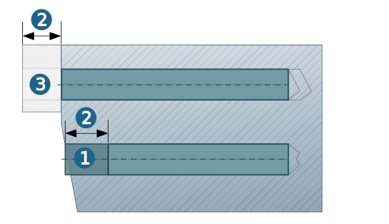
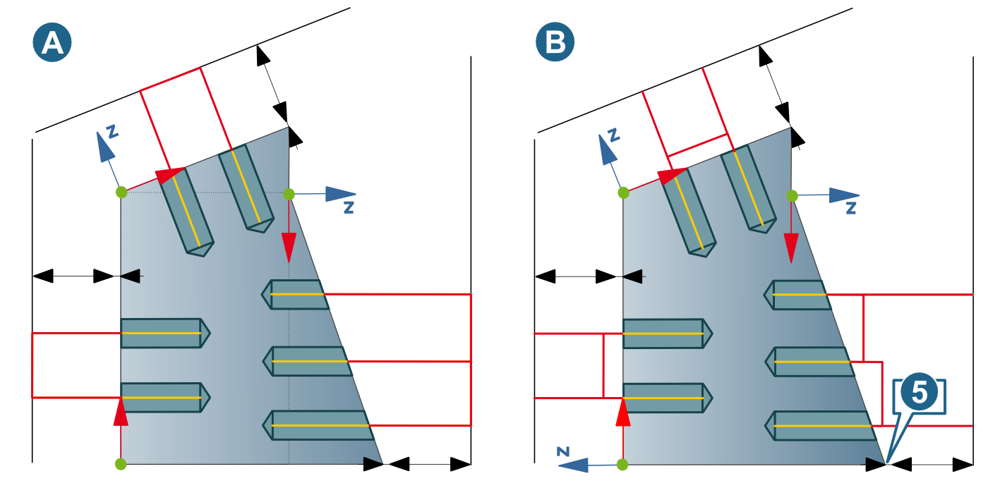
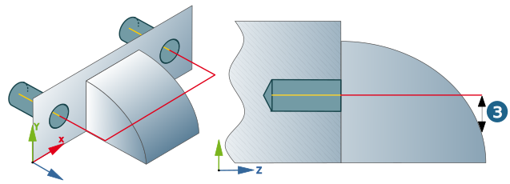

Parameters
Machining area
Offset top: Specify offset for the start of the drilling.
Bottom offset: The drill depth is reduced by the specified amount.
Absolute top / bottom: The defined absolute values are considered in each case. This facilitates simple machining if the drill hole(s) must be made before the material removal (of the stock model).
Tip angle compensation: Available for all drilling cycles except Centering, Helical Drilling, Thread Milling and Circular Pocket. Extends the toolpath by the length of the tip so that holes may be machined completely.
Break through length: Extends the toolpath in the axial direction. In the case of a through hole, approach must continue by this value to ensure that no burring occurs and the thread is completely formed.
Note
The Break through length option is used without taking the bottom type (Flat or Through) into account. Collisions with the model may occur if the option is used for blind holes. The Break through length option cannot be used in combination with blind or through holes if the Check hole function is enabled.
(1) Break through length and Tip angle compensation not activated.
(2) Break through length not activated, Tip angle compensation activated.
(3) Break through length and Tip angle compensation activated
 |
Hole security
These parameters apply for all drilling cycles. They refer to the drill holes of the component.
Clearance distance (1): The tool holds this distance to the edge of the unchamfered drill hole.
 |
Retract distance: Dimension of the axial distance between the top of the drill hole and the retract movement to the clearance plane.
Clearance plane: The J:Ft variable sets the clearance plane for all drilling cycles to the height of the highest selected feature relevant for machining. Entering J:Ft+50 results in additional clearance between the clearance plane and the highest feature selected in machining.
Cross hole safety
Clearance distance: To ensure a safer drilling process, the phases 3 and 5 (cross drilling without material removal) or the phase 6 (cross drilling with material removal) are each extended at the beginning and end by the amount of the clearance distance (1).
Examples:
Cross drilling without material removal: Phases 3 (A) and 5 (B) start earlier and end later. Phase 4 is shortened by the corresponding amount. (1) = Clearance distance.
Cross drilling with material removal: Phase 6 starts earlier and ends later. (1) = Clearance distance.
Machining parameters
Chip break: Activate if a chip break is to take place.
Initial pecking depth: Infeed depth in the first drilling stroke, that is, when entering the hole (without pilot hole and guide sleeve).
Pecking depth: Infeed depth of the drilling strokes performed after the initial drilling stroke.
Min. infeed depth: Minimum infeed depth in a drilling stroke if a Reduce value is defined.
Reduce value: Amount by which the pecking depth is reduced for each drilling stroke (after the initial infeed). Zn+1 = Zn – Reduce value.
Incremental retract: (A) Incremental retract after each drilling stroke. (1) Initial pecking depth. (2) Pecking depth. (3) Retract value.
→ : (B) Complete retraction after each drilling stroke to pilot depth. Make sure that the tool does not leave the hole completely, as there is a risk of tool breakage. The tool remains in the hole with Tip angle length + additional clearance.
(1) Initial pecking depth. (2) Pecking depth. (4) Retract to pilot depth.
→ : (C) Complete retraction after each drilling stroke to the top edge of the hole. Make sure that the tool does not leave the hole completely, as there is a risk of tool breakage. The tool remains in the hole with Tip angle length + additional clearance.
(1) Initial pecking depth. (2) Pecking depth. (5) Retract to top.
(D) = Lead in feedrate. (E) Retract feedrate.
Retract feedrate: Feedrate for retraction of the tool during the chip break (without consideration of cross holes).
Lead in feedrate: Feedrate for re-entry of the tool during the chip break (without consideration of cross holes).
Lead in
Spot / pilot hole (1): A pilot hole provides greater stability at the start of deep hole drilling. Feedrate and spindle speed adjustments are possible for the depth of the pilot hole (F1/S1).
Drilling depth (2): Define the depth of the Spot / Pilot hole.
Guide sleeve (3): A guide sleeve is used to accurately guide the tool at the start of drilling; it can be secured to the workpiece and remains in place until drilling starts. Define the length of the guide sleeve.
When the guide sleeve is fastened to the part, the Clearance distance should be greater than the length of the guide sleeve.
|  |
Retract mode
Clearance plane (A): The start and end position of any machining plane are located on the clearance plane. Auto clearance: height of the infeed between the drill holes, see (1) in the detailed graphic.
Clearance distance (B): Start and end position of any machining plane are located on the clearance plane. Infeeds between the drill holes take place at the Clearance distance, see (2) in the detailed graphic.
|  |
Detailed graphic:
(1) Auto clearance, (2) Clearance distance.
 |
Plane on global highest point: Plane through point on the model at the greatest distance to the origin of the current frame.
Plane with lateral clearance: the start and end position are calculated so that the approach and retract motion is executed in the Z direction of the current frame free of collisions. The start and end positions are tested with the Lateral clearance distance option. In the event of a potential collision, infeed will take place starting from the Plane on global highest point.
Relative safety
Auto clearance (1): Distance to the highest point of the model (5) from the machining direction.
Movement clearance (3): Distance to be maintained in XY direction when infeeding between drill holes to avoid collision (available only for retract mode Clearance distance). In the event of a collision, the machining follows with clearance distance to the first collision-free point from the machining direction.
|  |
Lateral clearance (4): Additional lateral clearance for the start position. The start and end position are calculated so that the approach and retract motion is executed in the Z direction of the current frame free of collisions. The start and end positions are tested with the Lateral clearance distance option. In the event of a potential collision, infeed will take place starting from the Plane on global highest point.
This option is only available for retract mode plane with lateral clearance (C).
 |
Rapid smoothing : Enable the High speed option to activate Rapid smoothing (1).
When performing multiple-sided machining in 5X Drilling mode, the linking movements are shaped without abrupt changes of direction. The Smooth factor affects the shape of the smoothed movement as a ratio of the length of the connection line (2) to the required "height" of the movement (3). If the selected smooth factor potentially leads to a collision, the movement is automatically rendered collision free.
 |
The Clearance distance retract mode and Clearance distance infeed strategy must be active.